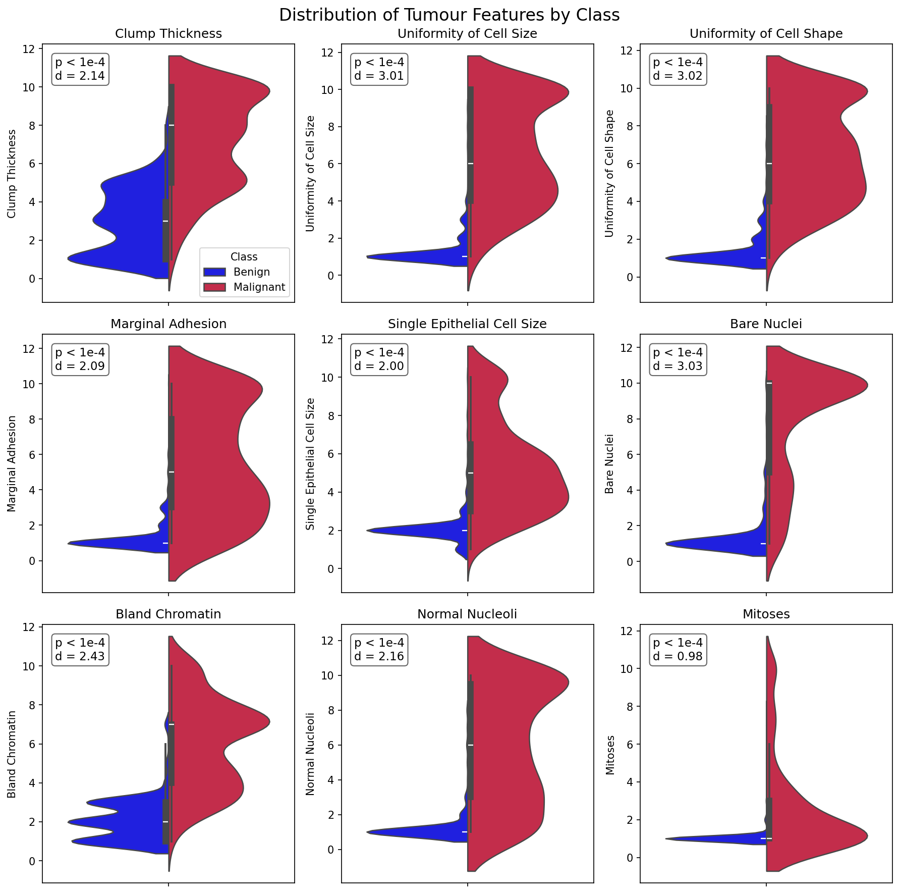
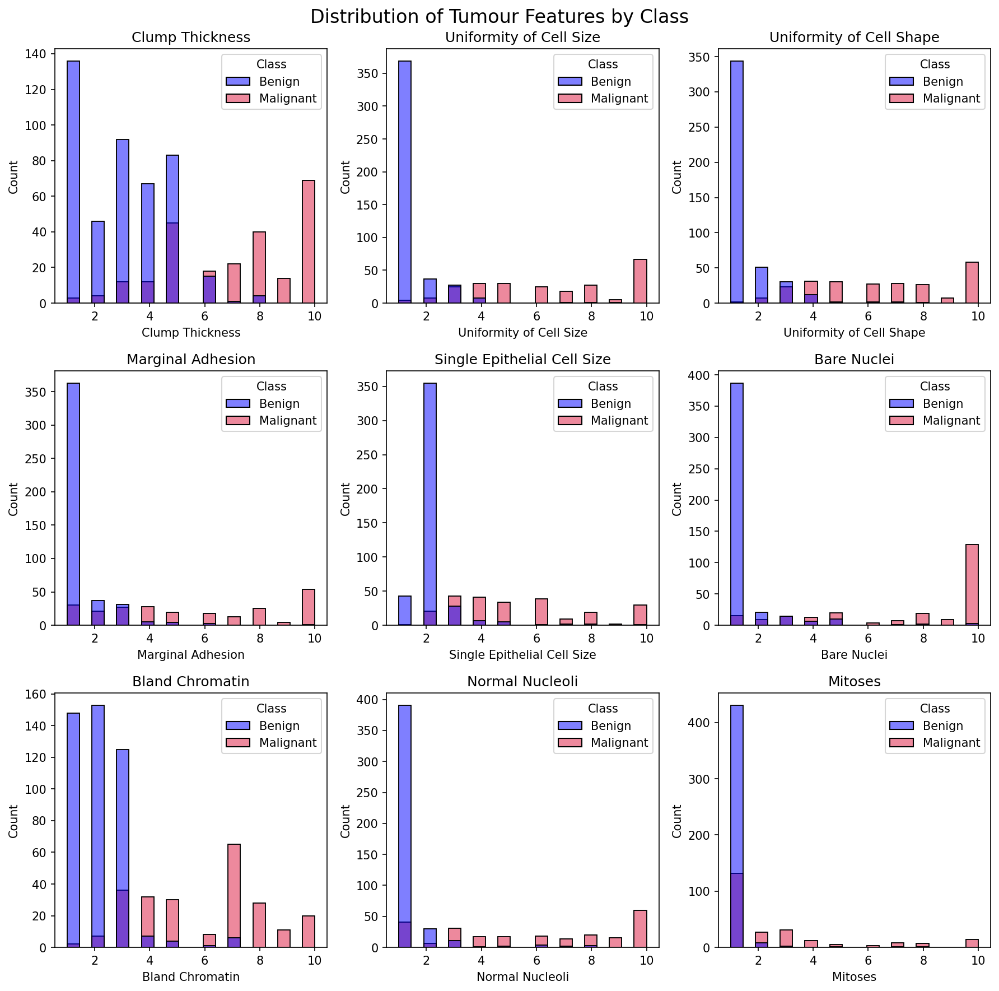
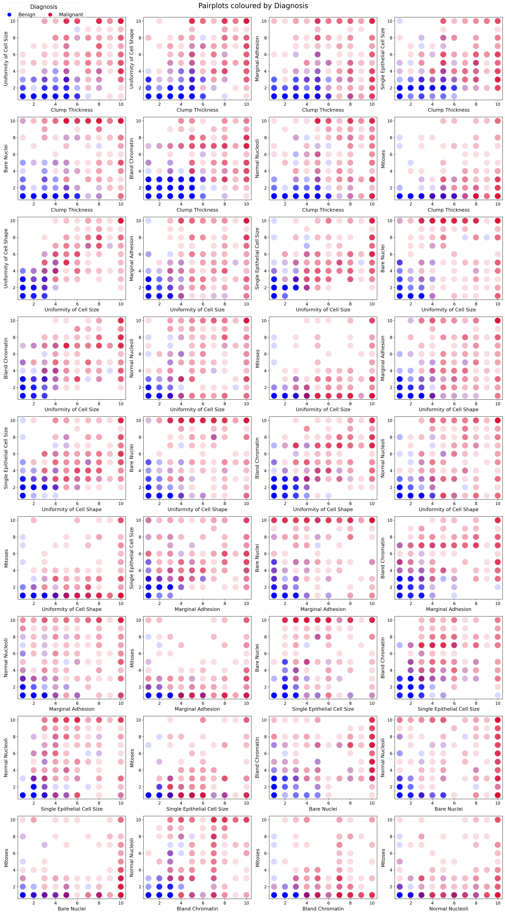

This section describes the datasets used in the analysis, their structure, origin, and the preprocessing steps applied to ensure data quality, consistency, and usability.
The Breast Cancer Wisconsin (Original) dataset contains clinical observations collected by Dr. William H. Wolberg. The data was gathered over time, resulting in natural chronological groupings.
| Group | Instances | Date |
|---|---|---|
| Group 1 | 367 | January 1989 |
| Group 2 | 70 | October 1989 |
| Group 3 | 31 | February 1990 |
| Group 4 | 17 | April 1990 |
| Group 5 | 48 | August 1990 |
| Group 6 | 49 | January 1991 (updated) |
| Group 7 | 31 | June 1991 |
| Group 8 | 86 | November 1991 |
Total: 699 samples (as of July 15, 1992)
Note: Group 1 originally contained 369 samples; 2 were later removed.
| Feature | Categorical Values |
|---|---|
| Clump Thickness | 1 – 10 |
| Uniformity of Cell Size | 1 – 10 |
| Uniformity of Cell Shape | 1 – 10 |
| Marginal Adhesion | 1 – 10 |
| Single Epithelial Cell Size | 1 – 10 |
| Bare Nuclei | 1 – 10 |
| Bland Chromatin | 1 – 10 |
| Normal Nucleoli | 1 – 10 |
| Mitoses | 1 – 10 |
| Class | Benign / Malignant |
Handling Missing Values
Target Variable Standardization
2 → Benign4 → MalignantIdentifier Issues
Data Type Consistency
This dataset contains features computed from digitized images of Fine Needle Aspirate (FNA) of breast masses. The features describe geometric and statistical properties of cell nuclei.
| Feature | Description |
|---|---|
| Radius | Mean distance from center to perimeter points |
| Texture | Standard deviation of gray-scale values |
| Perimeter | Perimeter of the nucleus |
| Area | Area of the nucleus |
| Smoothness | Local variation in radius lengths |
| Compactness | (Perimeter² / Area) − 1.0 |
| Concavity | Severity of concave portions of the contour |
| Concave Points | Number of concave portions of the contour |
| Symmetry | Symmetry of the nucleus |
| Fractal Dimension | "Coastline approximation" − 1 |
| Reference: | |
| K. P. Bennett & O. L. Mangasarian (1992) |
Removed Irrelevant Columns
Unnamed: 32 (entirely null)Target Variable Standardization
M → MalignantB → BenignColumn Naming Consistency
The METABRIC (Molecular Taxonomy of Breast Cancer International Consortium) dataset contains clinical and genomic data for breast cancer patients, focusing on survival outcomes.
Includes:
Suitable for:
Missing Value Handling
Data Validation
After cleaning and preprocessing all datasets:
All datasets were standardized in terms of:
A unified database was created:
breast_cancer_analysis.db


